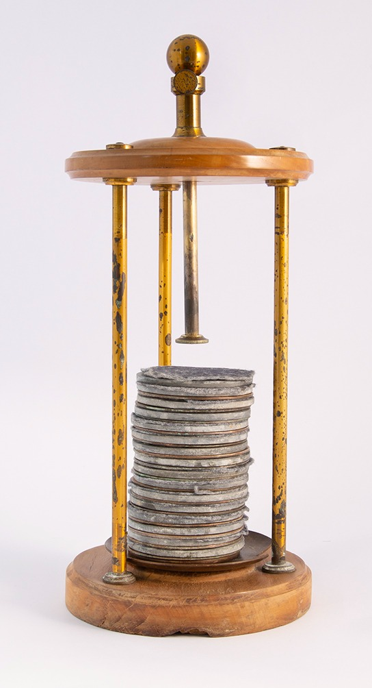

Pila a Colonna

Scuola di provenienza: Istituto agrario "F. De Sanctis", Avellino
Settore: Elettrologia
Costruttori: Sconosciuto
Materiali: Rame, zinco, ottone, feltri, legno di mogano
Accessori: Nessuno
Stato di conservazione: Buono,mancano dei dischetti
Descrizione: Inventata da Alessandro Volta nel 1800 la pila consiste in un certo numero di coppie di dischi di zinco e di rame, sovrapposte le une alle altre separate tra loro da rotelle di panno umettato con acqua leggermente acidulato.Se la pila comincia all’estremità inferiore con un disco di rame , terminerà con un disco di zinco. La pila voltaica deve essere isolata dal suolo, perciò la si colloca su un piedistallo di legno rivestito di lacca. Inconveniente della pila a colonna è la dannosa comunicazione tra le singole coppie dovute al peso dei dischi superiori che premono su quelli inferiori ne spremono il liquido. Per tale motivo si è pensato di disporre uno accanto all’altro gli elementi della pila invasi riempiti con liquido conduttore e messi poi in comunicazione tra di loro in modo da avere “la pila corona di tazze” .